CS 180 · Project 3A
Exploring the Power of Flow Models
In this project, I explored image generation and editing using PixNerd-XXL, a pretrained flow-based generative model. I implemented the core components of flow matching inference, including linear interpolation, one-step denoising, Euler sampling, and classifier-free guidance (CFG). I then applied these techniques to image-to-image editing, text-guided transformations, visual anagrams, and hybrid images.
The main goal was to understand how a learned velocity field can transform random noise into coherent images, and how different sampling and guidance strategies affect the generated results.
Part 1.1Constructing noisy training inputs
Flow matching constructs intermediate images by linearly interpolating between Gaussian noise and a clean image:
$$x_t = (1-t)\,\epsilon + t\,x_1$$
where \(x_1\) is the original image, \(\epsilon\) is Gaussian noise, and \(t\in[0,1]\) determines the interpolation between them. My own image for Section 1 is a night photo of Levi's Stadium with fireworks over the scoreboard. I sampled a single Gaussian noise tensor and used it to generate noisy versions of the image at \(t=0.25\), \(0.50\), and \(0.75\).
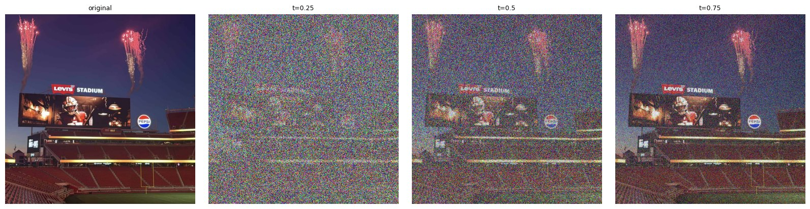
As \(t\) increases, the original image becomes progressively more recognizable. At \(t=0.25\), Gaussian noise dominates the image and only the bright scoreboard and stadium lights peek through, while at \(t=0.75\), much more of the original structure and color are preserved. This illustrates how flow matching defines a continuous path between noise and clean images.
Part 1.2Classical denoising
I first applied Gaussian blur as a classical denoising baseline. Since the clean image is scaled by \(t\) during interpolation, I divided the noisy input by \(t\) before applying the blur:
$$\hat{x}_1 = G_\sigma\!\left(\frac{x_t}{t}\right)$$
For each noise level, I compared blur strengths \(\sigma\in\{1, 2, 4, 8, 16\}\) and selected the one with the lowest mean squared error relative to the original image. The best choices were \(\sigma=8\) at \(t=0.25\), \(\sigma=4\) at \(t=0.50\), and \(\sigma=1\) at \(t=0.75\).
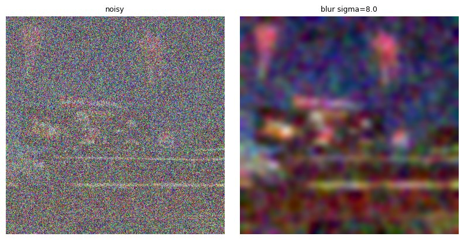
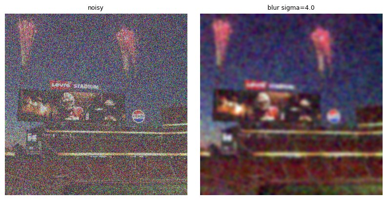
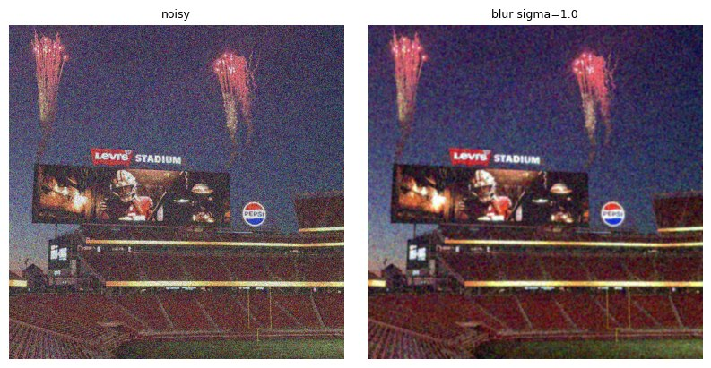
Gaussian blur reduces noise by averaging nearby pixels, but it also removes high-frequency image details. This tradeoff is especially noticeable at smaller \(t\), where the noise is stronger: at \(t=0.25\) the best result is just colored blobs where the fireworks and scoreboard used to be. At larger \(t\), more of the original image can be recovered without excessive smoothing, which is why the best \(\sigma\) shrinks as \(t\) grows.
Part 1.3One-step denoising
Next, I used the pretrained flow model to predict the velocity needed to move from a noisy image toward the clean image. Instead of applying a conventional image filter, the model estimates the direction of the denoising process:
$$\hat{x}_1 = x_t + (1-t)\,v_\theta(x_t, t, c)$$
I used the text condition "a high quality photo" and applied one-step denoising to the same three noisy inputs.
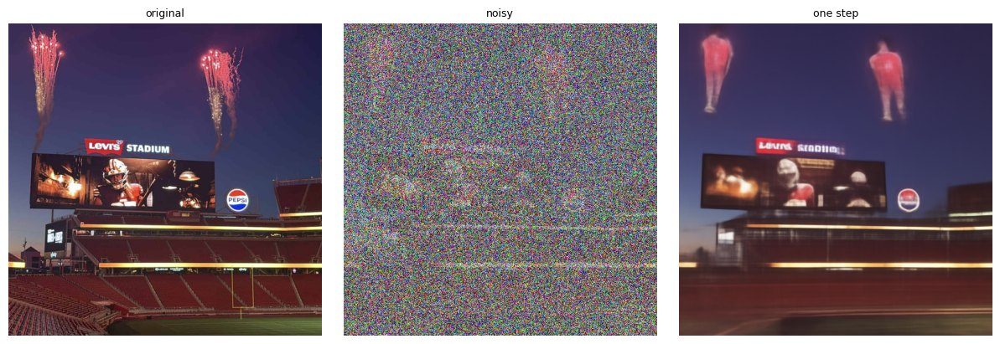
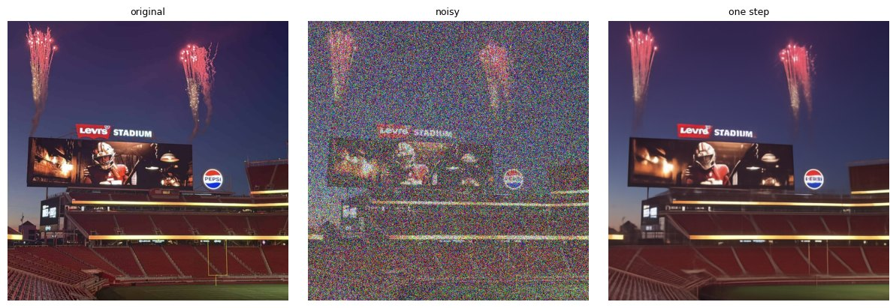
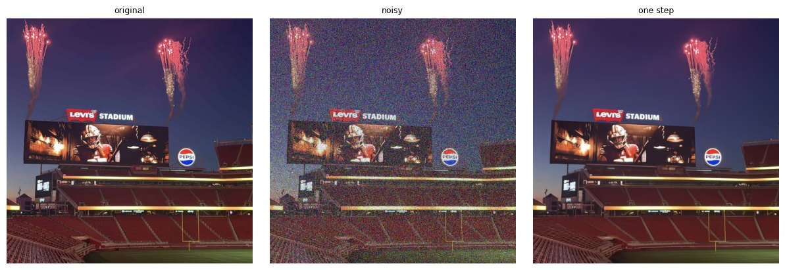
Unlike Gaussian blur, the learned model can use image and semantic information to reconstruct plausible features rather than simply smoothing pixels. However, a single velocity prediction is only an approximation of the full denoising trajectory, so reconstruction errors may remain. The most fun example is at \(t=0.25\): the model could not see the fireworks through the noise, so it turned the two red streaks into two people floating in the sky. At \(t=0.50\) and \(0.75\) the estimate is close to the original, with only slightly soft text on the scoreboard.
Part 1.4Visualizing velocity
To better understand the learned velocity field, I compared the model's predicted update with the ground-truth update. The ground-truth velocity is
$$v_{\mathrm{gt}} = x_1 - \epsilon$$
The predicted and ground-truth updates toward the clean endpoint are \((1-t)\,v_\theta(x_t,t,c)\) and \((1-t)\,v_{\mathrm{gt}}\), respectively. I visualized both updates and computed a per-pixel RMS error map across RGB to highlight their differences. All updates share one symmetric color scale with zero at middle gray, and all three error maps share the same limits, so the times can be compared directly.
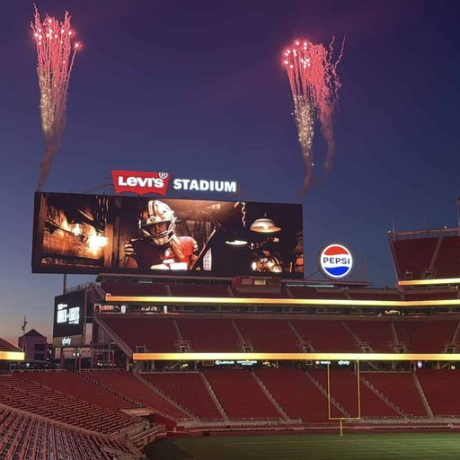
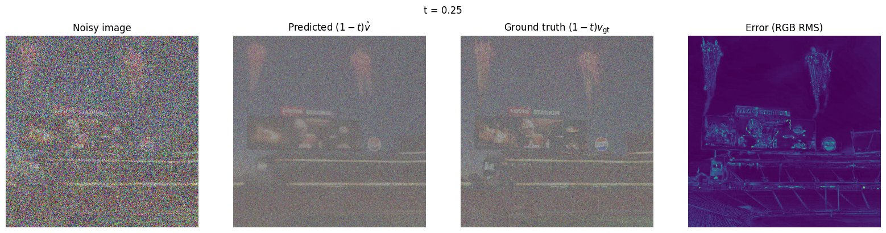
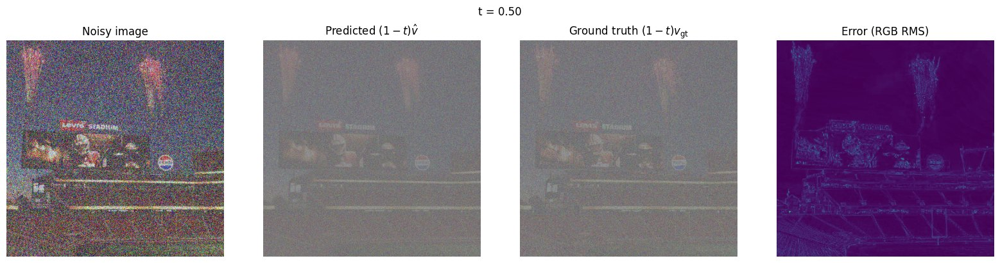
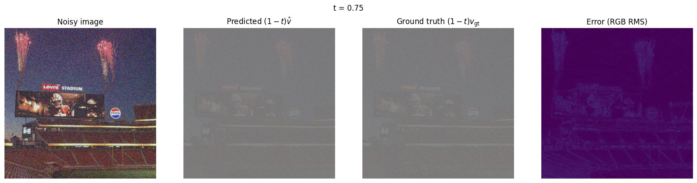
The error maps illustrate where the model's predicted direction differs from the exact interpolation trajectory. These differences arise because the model learns a general velocity field across many possible images rather than recovering the exact noise and image pair used in this experiment. In my maps, the largest errors are at \(t=0.25\), along fine, high-contrast details: the firework sparks, the scoreboard text and player, the Pepsi logo, and the edges of the seat rows. The smooth night sky has almost no error, and the whole map fades as \(t\) increases, because there is less left to guess.
Part 1.5Iterative denoising with Euler sampling
One-step denoising assumes that the predicted velocity remains constant until the clean endpoint. In practice, the velocity changes along the sampling trajectory. I implemented Euler integration to repeatedly update the image using
$$x_{t+h} = x_t + h\,v_\theta(x_t, t, c)$$
Using a step size of \(h=0.02\) (with the last step shortened to land exactly on \(t=1\)), I performed 25 updates starting from the noisy image at \(t=0.50\).
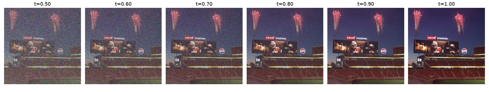
Replay the denoising
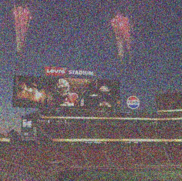
t = 0.50 · step 0 of 25
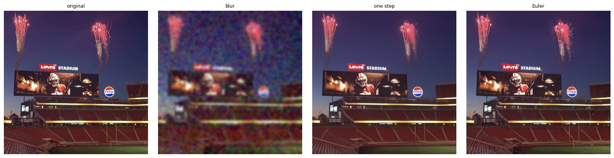
| Method | MSE |
|---|---|
| Gaussian blur (σ = 4) | 0.0334 |
| One-step denoising | 0.0083 |
| Euler, 25 steps | 0.0099 |
Iterative sampling allows the model to recompute its velocity prediction after every step, adapting the denoising direction as the image changes. Compared with a single extrapolation, this follows the learned flow more closely and produces a more coherent final reconstruction.
On my image, both model-based methods beat the blur by a wide margin. Visually, Euler is the best: the firework sparks, the "STADIUM" letters, and the seats are crisp, while the one-step result is slightly soft. Interestingly, one-step has the lower MSE. My guess is that one step predicts something close to an average of possible clean images, which MSE rewards, while Euler commits to sharp, realistic details that do not exactly match the original pixels.
Part 1.6Generating images from noise
After implementing Euler sampling, I used the same procedure to generate images directly from Gaussian noise. Starting at \(t=0\), I integrated the learned velocity field until \(t=1\) (50 updates), using the prompt "a high quality photo". I generated five images using seeds 180 to 184.
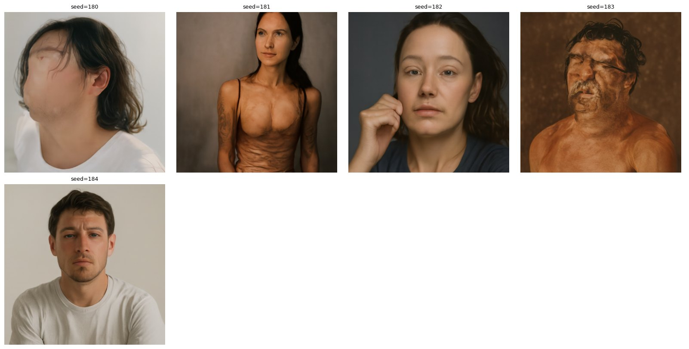
Although all samples use the same text prompt, their contents vary because each sampling trajectory begins from a different noise tensor. Still, there is a very strong subject bias: all five images are portraits of a person, posed head-and-shoulders against a plain studio background. "A high quality photo" seems to mean "a portrait" to this model. The quality is uneven. Seeds 182 and 184 are believable faces, but seed 180 has a blank, featureless face, seed 183 has a melted, distorted face, and seed 181 has odd, blotchy skin on the body.
Part 2.1Classifier-free guidance
Classifier-free guidance (CFG) strengthens the effect of text conditioning by combining conditional and unconditional velocity predictions:
$$v_{\mathrm{CFG}} = v_c + w\,(v_c - v_u)$$
where \(v_c\) is the velocity predicted with the text prompt, \(v_u\) is the prediction with an empty prompt, and \(w\) controls guidance strength. I implemented CFG with \(w=7\) and generated five images using the same initial noise tensors as Part 1.6, so each pair below differs only by guidance. (As a check, \(w=0\) reproduces the plain conditional prediction exactly.)
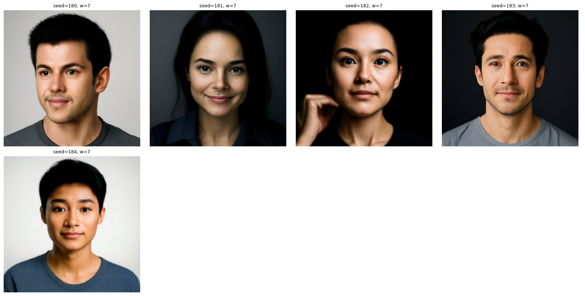
CFG encourages the sampling trajectory to follow the text condition more strongly. In my results, every CFG sample is a clean, sharp studio headshot: the faceless head of seed 180 and the melted face of seed 183 become normal faces, and skin, eyes, and hair are much more detailed. Each pair keeps some layout from its shared noise, for example seed 182 keeps the hand raised to the cheek. The cost is diversity: all five CFG images become centered, front-facing portraits with similar lighting and darker, high-contrast backgrounds, so CFG made the portrait bias even stronger.
Part 3.1Image-to-image editing
Image-to-image editing combines the forward noising process with guided denoising. I first interpolated an existing image with Gaussian noise at a selected starting time, then used the pretrained flow model (with CFG, \(w=7\)) to generate an edited result. I used the starting times
$$t_{\text{start}}\in\{0.02,\ 0.04,\ 0.06,\ 0.10,\ 0.14,\ 0.25,\ 0.50\}$$
Because smaller starting times introduce more noise, they allow the model to make larger changes. Higher starting times preserve more information about the original image.
Campanile
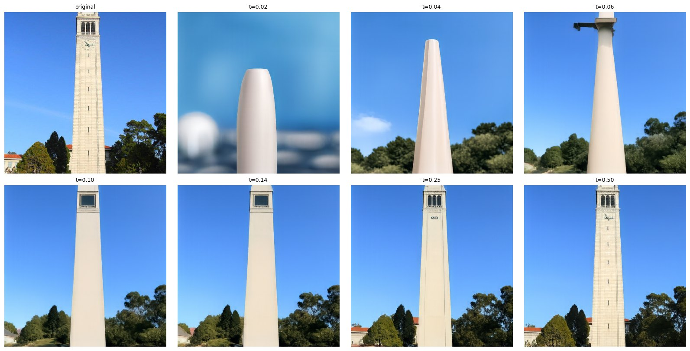
The starting time controls the balance between creative reconstruction and preserving the original image. At \(t=0.02\) the tower becomes a smooth white pillar in front of a blurry blue background, and from \(0.04\) to \(0.14\) it is a plain white obelisk in a blue sky. The real Campanile, with its belfry windows, appears at \(0.25\), and at \(0.50\) even the clock is back.
Editing my own images
I applied the same editing procedure to two of my own test images: a photograph of Levi's Stadium and a cartoon dinosaur.
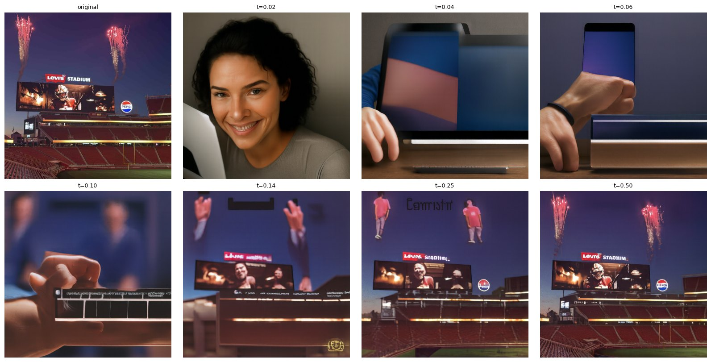
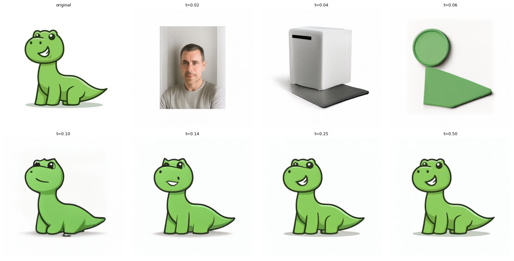
These examples compare a photograph full of architecture, lighting, and fine details with a simple illustration with large uniform regions. The portrait bias from Part 1.6 shows up again: at \(t=0.02\), the stadium becomes a smiling woman and the dinosaur becomes a framed photo of a man. In between, the model keeps only the colors and layout. The stadium's dark blue and red turn into hands holding a laptop and a phone, and the dinosaur's green turns into green geometric shapes. The stadium becomes recognizable again around \(0.14\) to \(0.25\) (where the fireworks once more turn into floating people), and the dinosaur is back as early as \(0.10\), because its big flat shapes survive the noise much better than the stadium's small details.
Editing a web image and hand-drawn images
I also edited a downloaded image, a cubist-style painting of a guitar, and two of my own drawings, a triangle chicken and a flower, to see how the model handles inputs that differ from natural photographs.
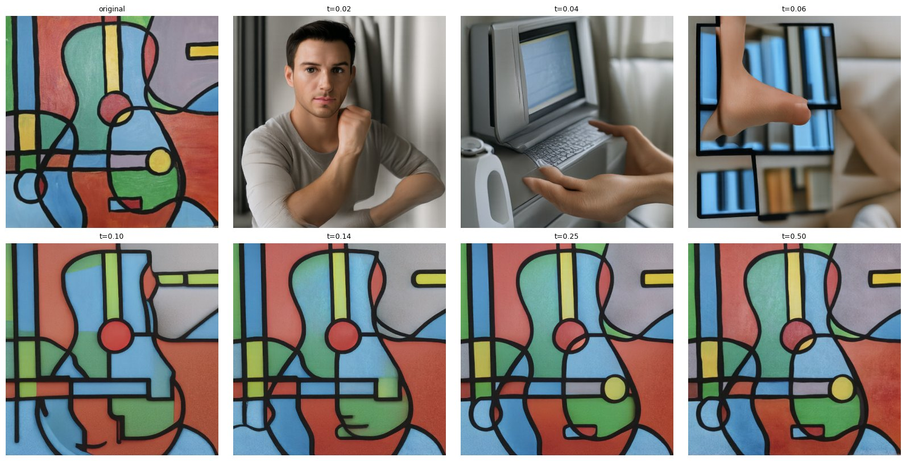
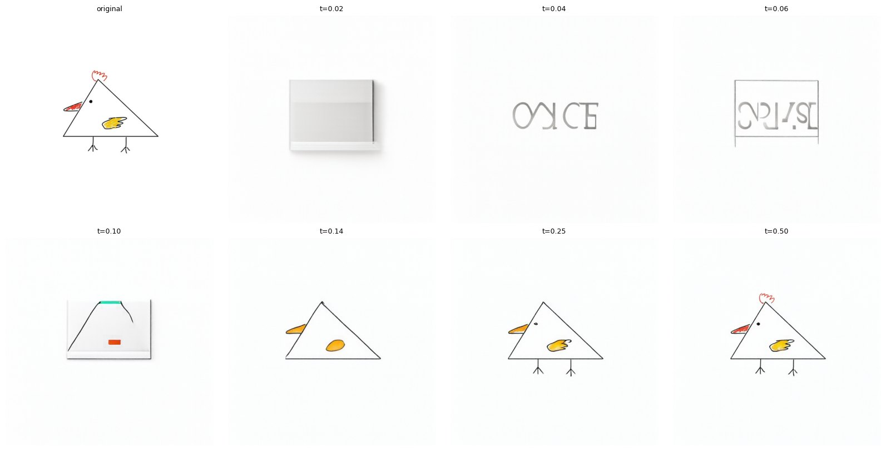
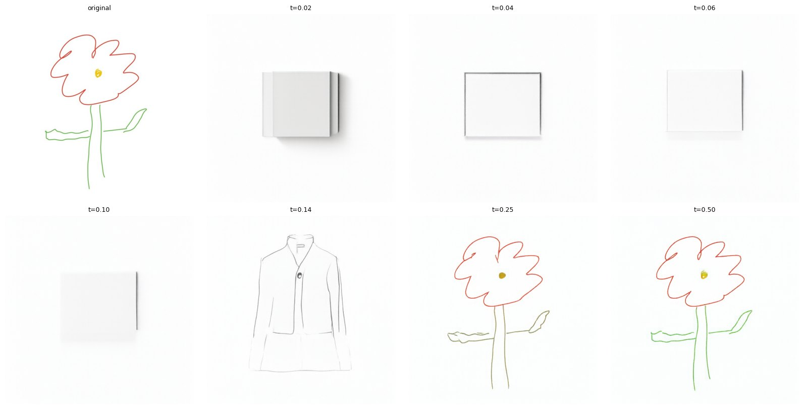
These experiments show how the model uses learned image priors to interpret sparse or stylized visual information. At smaller starting times, the model introduces new semantic content, while at larger starting times it is more constrained by the original shapes and composition.
- Guitar painting: the early edits are realistic photos (a man posing, hands at a computer, a foot by a bookshelf). The painting's bold outlines and color blocks return at \(0.10\), and from \(0.25\) on it is a close, slightly smoother copy.
- Chicken: a line drawing is almost all white paper, so at low starting times the model sees "white" and makes product shots of white boxes and signs with mirrored letters. The triangle body and beak appear at \(0.14\), the legs at \(0.25\), and the red comb only at \(0.50\).
- Flower: the same happens with white cards and boxes, plus a pencil sketch of a jacket at \(0.14\). The flower appears at \(0.25\) with duller colors and is faithful at \(0.50\).
Thin lines are mostly high-frequency information, so they disappear first under noise. That is why the drawings need much larger starting times than the painting or the photos to come back.
Part 3.2Text-guided image editing
In this section, I extended image-to-image editing by replacing the generic photo condition with prompts that describe specific target images. Rather than simply reconstructing the input, the model is encouraged to reinterpret its contents according to the text prompt.
Campanile → Rocket
Prompt: "a photograph of a futuristic rocket on a launch pad"
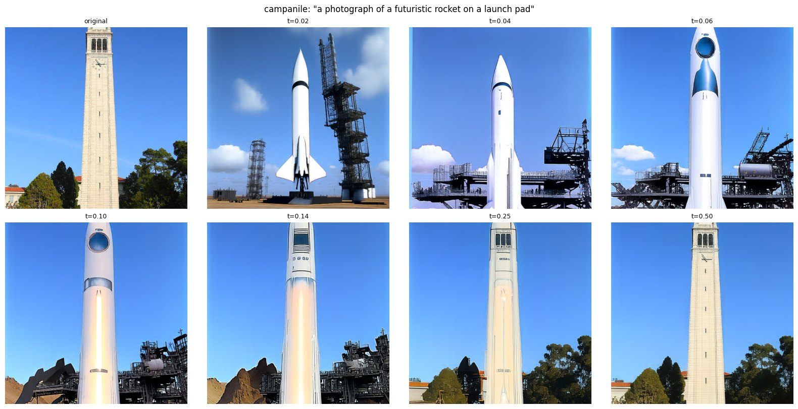
I chose this prompt because the Campanile's tall, narrow structure resembles a rocket. From \(0.02\) to \(0.06\), the model draws a full white rocket with launch towers and gantries. At \(0.10\) and \(0.14\), the rocket stands exactly where the tower was, with the Campanile's tree line still at the bottom. At \(0.25\), it is a true mix: the Campanile's belfry windows sit on top of a rocket body with a glowing stripe. At \(0.50\) it is the Campanile again.
Levi's Stadium → Roman arena
Prompt: "a photograph of an ancient Roman gladiator arena filled with spectators"
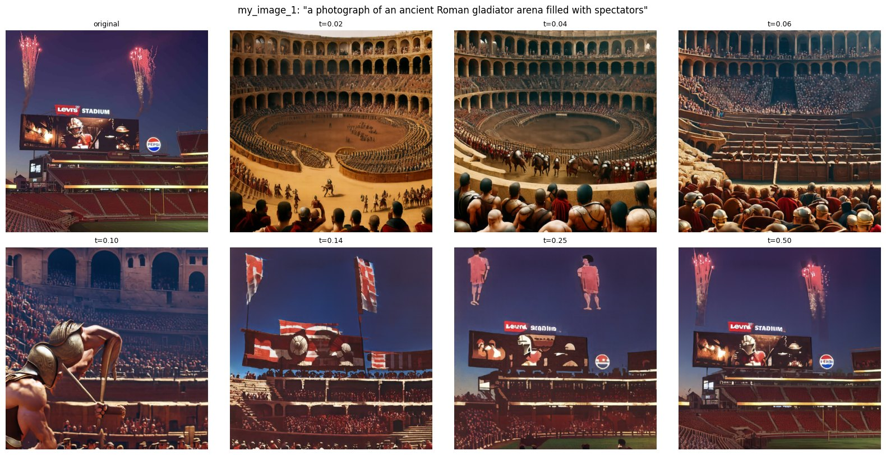
I selected this prompt because a modern football stadium and a Roman Colosseum share similar large-scale geometry, with spectator seating surrounding a central arena. At low starting times, the model paints a complete Colosseum with crowds, horses, and helmeted spectators. At \(0.10\), a gladiator stands in front of the stands. At \(0.14\), the scoreboard turns into hanging red-and-white banners, and at \(0.25\) it keeps the stadium layout but turns the fireworks into two figures in Roman clothes and puts a knight on the screen.
Cartoon dinosaur → T. rex
Prompt: "a photograph of a giant green Tyrannosaurus rex in a prehistoric jungle"
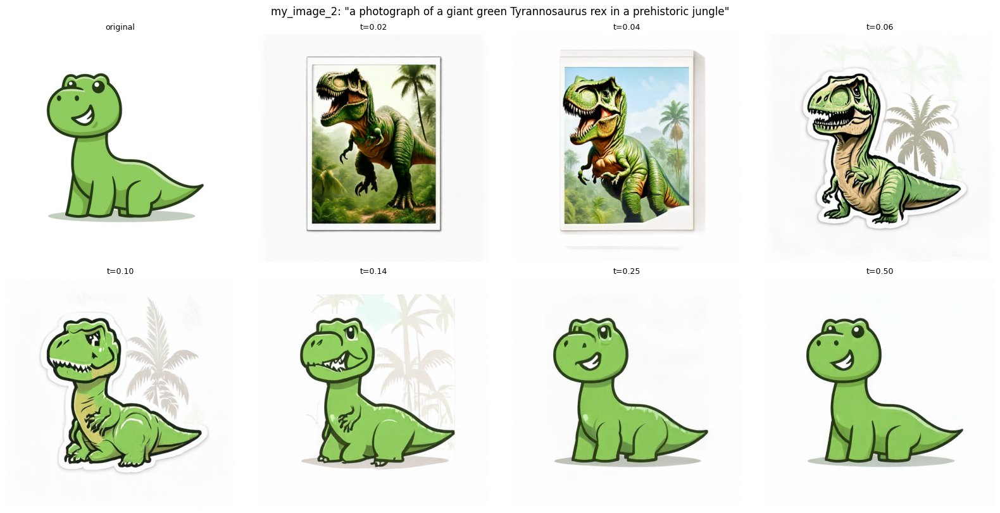
This tests whether the model can turn a simple cartoon into a photorealistic dinosaur. At \(0.02\) and \(0.04\), it creates a realistic roaring T. rex in a jungle, but as a photo printed inside a white frame, because it keeps the large white background. From \(0.06\) to \(0.14\), the cartoon keeps its pose but gains T. rex teeth, arms, and a jungle of palm trees behind it, like a sticker. From \(0.25\) on, the original cartoon wins.
Discussion
Across these experiments, the starting time determines how strongly the model can follow the text prompt relative to the original image. Lower starting times provide greater freedom for semantic changes, whereas higher starting times tend to preserve the original image. Intermediate starting times are the most interesting because they combine recognizable elements from the input with new content from the prompt. My favorite is the Campanile → rocket at \(t=0.10\) to \(0.25\), where the tower and the rocket are both clearly visible. The dinosaur → T. rex at \(0.06\) is a close second.
Part 3.3Visual anagrams
Visual anagrams are images that depict different subjects depending on their orientation. To generate these illusions, I computed two CFG velocity predictions at each sampling step: one for the upright image with prompt \(p_1\), and another for the image rotated by 180 degrees with prompt \(p_2\). I rotated the second prediction back to the original orientation and averaged the two:
$$v_1 = \mathrm{CFG}(x_t, t, p_1),\qquad v_2 = \mathrm{flip}\big(\mathrm{CFG}(\mathrm{flip}(x_t), t, p_2)\big),\qquad v = \frac{v_1 + v_2}{2}$$
The combined velocity encourages the generated image to satisfy both prompts under their respective orientations.
Anagram 1
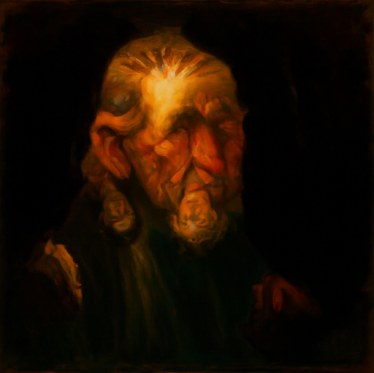
"an oil painting of an old man"
Anagram 2
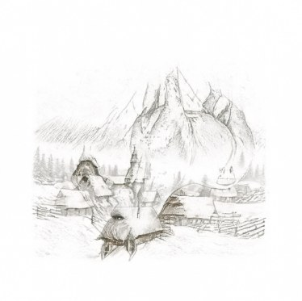
"a lithograph of a snowy mountain village"
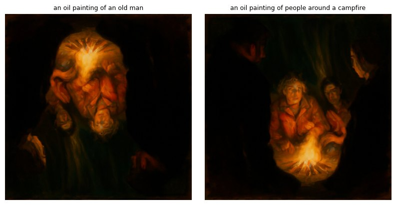
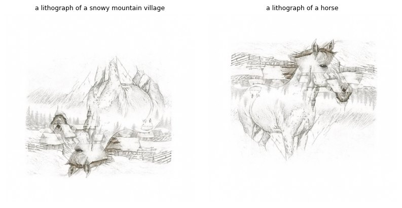
The challenge is that both interpretations must share the same pixels, so the model has to find structures that work both ways. In the first illusion, the old man's glowing face becomes the campfire when flipped, and his dark coat and shoulders become the people sitting around it. Both readings work well, although the old man's face is a bit distorted because an upside-down face from the campfire scene is hidden in his chin. In the second illusion, the mountains and houses are clear upright, and the horse's head and body are clear when flipped. The weak spot is that the horse's head is also visible at the bottom of the village, so the upright view feels a little busy.
Part 3.4Hybrid images
Hybrid images combine two different visual interpretations at different spatial frequencies. Low-frequency information dominates when an image is viewed from far away or reduced in size, while high-frequency details become more noticeable up close. I adapted this idea to flow sampling by combining the low-frequency part of one text-conditioned CFG velocity with the high-frequency part of another:
$$v = f_{\mathrm{lowpass}}(v_1) + \big(v_2 - f_{\mathrm{lowpass}}(v_2)\big)$$
The low-pass filter is a Gaussian blur with kernel size 265 and \(\sigma=16\), and the combined velocity is used in every Euler step.
Hybrid 1: Skull and waterfall
Far (low frequency): "a lithograph of a skull"
Close (high frequency): "a lithograph of a waterfall"
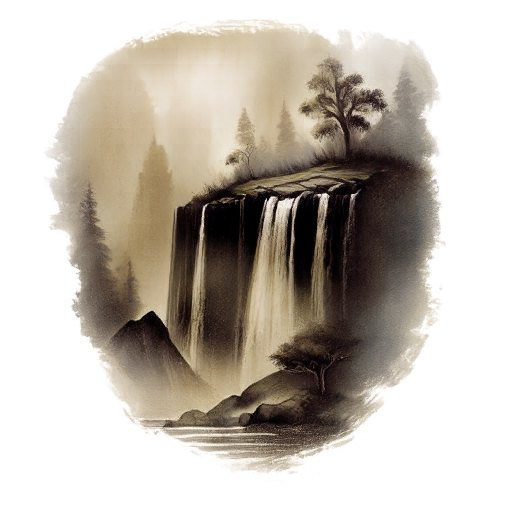
Up close, the waterfall clearly dominates: falling water, a cliff, and trees. From far away, the skull is only faintly there: it mostly shows up as the overall shape, since the whole picture sits inside a rounded, head-like outline that narrows toward the bottom. The facial features of the skull did not survive, so this one is a weak hybrid, and more runs with other seeds would probably give a stronger skull.
Hybrid 2: Cat and forest
Far (low frequency): "a lithograph of a cat"
Close (high frequency): "a lithograph of a forest"
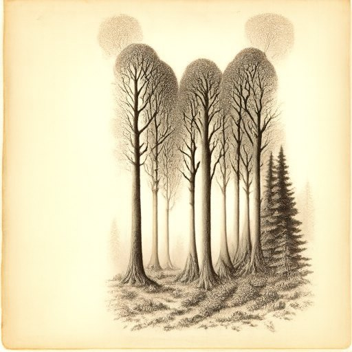
Up close, it is a detailed forest of tall trees. From far away, the two round tree crowns at the top read as a cat's ears, and the tight group of trunks forms the cat's head and body, so the cat appears as a silhouette. In both hybrids the close-up subject is much stronger than the distant one, because the low-pass part only controls large shapes and tones, not details.
On the live page, each hybrid has a Close view / Far view toggle that shrinks it to 64 pixels, and the visual anagrams can be rotated in place. In this PDF, the far view is shown as the 64 × 64 image next to each hybrid.
Wrapping upConclusion
This project demonstrated how flow-based generative models can support both image synthesis and creative editing through variations of the same sampling process. By implementing Euler integration and classifier-free guidance, I explored how learned velocity predictions and text conditions influence image generation.
The editing experiments further illustrated the tradeoff between preserving an input image and allowing semantic transformations, while visual anagrams and hybrid images demonstrated how multiple text-conditioned predictions can be combined to produce more complex visual effects.